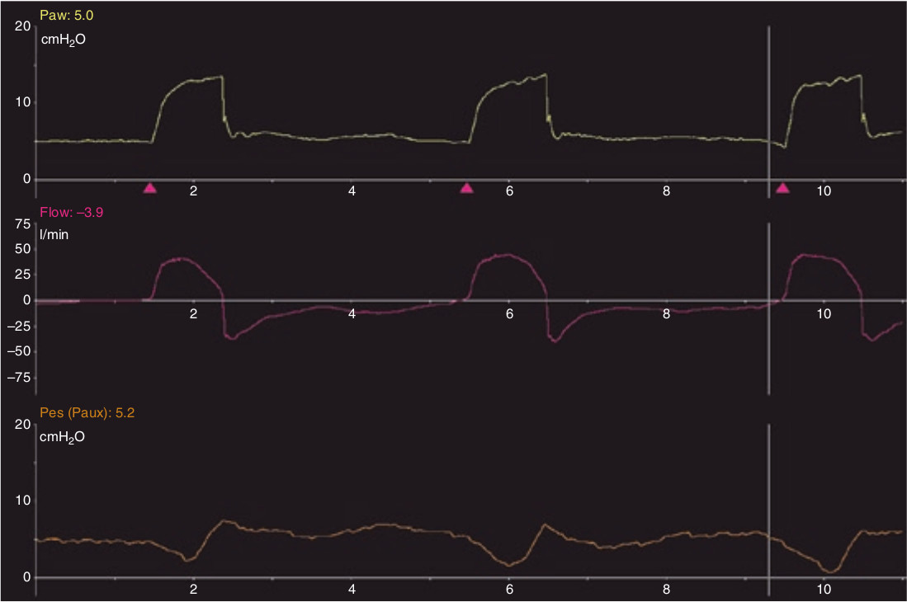

از روی منحنی فشار مروی، لحظه شروع تلاش دمی بیمار را میتوان بطور دقیق تعیین نمود. تاخیر در ترایگر بدین گونه تعریف میگردد: هنگامیکه فاصله زمانی شروع تلاش دمی و شروع صعود فشار یا شدت جریان دمی بیشتر از 200 میلی ثانیه باشد میگوئیم که تاخیر در ترایگر وجود دارد.

کدام مورد زیر در مورد تاخیر در ترایگر دمی غلط است؟
۱ - از لحظه شروع دندانه منفی در PES اندازه گیری میشود
۲ - بستگی به درایو تنفسی دارد
۳ - بستگی به زمان صعود دارد
۴ - وقتی فشار راه هوائی شروع به افزایش میکند تمام میشود
۵ - بستگی به تنظیم حساسیت ترایگر دمی دارد